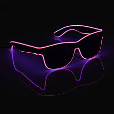

Krypto HUD (Óculos AR)
O Krypto HUD projeta uma tela flutuante de Realidade Aumentada customizável diretamente no seu campo de visão. Possui tradutor simultâneo para 40 idiomas, scanner de objetos e pareamento instantâneo via Neural Link.
Especificações do Módulo
Modelo: Krypto HUD - Gen 4
Autonomia: 48 horas de uso contínuo
Lentes: AMOLED Transparente 8K